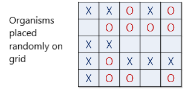
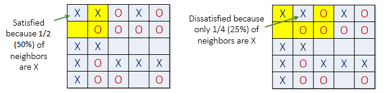
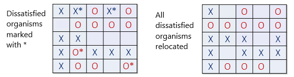
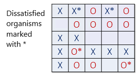
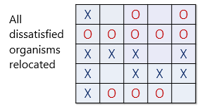

NSCI0007 Coursework
Contents
NSCI0007 Coursework#
Background#
Suppose there are two species of organism living in a neighbourhood. The organisms are initially spread about the neighbourhood at random, but are free to move around the neighbourhood as they wish. The organisms are lazy and so in general will stay where they are; however they have a slight preference for being surrounded by organisms of the same species. If too many of their immediate neighbours are of the opposite species, they will move to another location in the neighbourhood. Over time, what will the distribution of organisms look like? Fig. 1 shows one possibility.
Fig. 1 Panel 1 (left). Organisms of two species (blue and green) are initially spread around the neighbourhood at random, with some cells empty (white). Panels 2 - 4. At each time step, dissatisfied organisms move into unoccupied cells, resulting in shifting patterns of organism locations.#
The neighbourhood consists of a square grid of cells, each of which is either empty or occupied by an organism of one of the two species. Populations of the two species are initially placed into random locations of a neighbourhood represented by a grid.

The organisms prefer to be surrounded by organisms of the same type. An organism is satisfied if it is surrounded by at least a fraction \(f\) of organisms that are of a like species.
Let’s assume that \(f = 0.3\), meaning that an organism is satisfied when at least 30% of its neighbours are the same species as itself. If the organism is satisfied, then it will remain in its current location. If fewer than 30% are the same species, then the organism is not satisfied, and it will want to change its location in the grid.
The picture below (left) shows a satisfied organism because 50% of X’s neighbors are also X \((50\% > f)\). The next X (right) is not satisfied because only 25% of its neighbors are X \((25\% < f)\). Notice that empty cells are not counted when calculating similarity.
 
When an organism is not satisfied, it is moved to a an empty cell in the grid. The new location is chosen at random from amongst the empty cells.
In the image below (left), all dissatisfied organisms have an asterisk next to them. The image on the right shows the new configuration after all the dissatisfied organisms have been moved to unoccupied cells at random. Note that the new configuration may cause some organisms which were previously satisfied to become dissatisfied.
 
All dissatisfied organisms are moved in the same round. After the round is complete, a new round begins, and dissatisfied organisms are once again moved to new locations in the grid. These rounds continue until all organisms in the neighbourhood are satisfied with their location.
Instructions#
Your task is to write a Python notebook that implements the model described above, and then to investigate the model for various values of its parameters. You will model the grid as an array containing the values 1 and 2 which represent the two species of organism and 0 which represents an empty cell.
Question 1 [5 marks]#
Write a function initialise_grid(N, n) which returns an N by N array containing n 1s and n 2s placed at random cells in the array. Be sure that the returned array contains exactly the right number of 1s and 2s.
You can use the numpy function randint to generate random numbers in a given range.
Test that your code works as below.
grid = initialise_grid(4, 5)
# A 4 by 4 array with exactly 5 `1`s and 5 `2`s
print(grid)
[[2. 1. 1. 0.]
[2. 0. 2. 0.]
[2. 2. 1. 0.]
[0. 1. 0. 1.]]
Question 2 [5 marks]#
Write function neighbours_same(x, i, j) returns the number of neighbours which are of the same species as cell i, j. Be careful that your function doesn’t go beyond the borders of the grid!
Test that your function works correctly in the following cases.
x = np.array([[2, 2, 1, 2, 1],
[0, 1, 1, 1, 1],
[2, 2, 0, 0, 0],
[2, 1, 2, 2, 2],
[2, 1, 1, 0, 1]])
neighbours_same(x, 0, 0) # should return 1
neighbours_same(x, 0, 1) # should return 1
neighbours_same(x, 1, 0) # should return 0
neighbours_same(x, 1, 1) # should return 2
2
Question 3 [5 marks]#
Write a function neighbours_total(x, i, j) which returns the total number of non-empty neighbouring cells of cell i, j. Check that your function works in the following cases.
neighbours_total(x, 0, 0) # should return 2
neighbours_total(x, 0, 1) # should return 4
neighbours_total(x, 1, 0) # should return 5
neighbours_total(x, 1, 1) # should return 6
6
Question 4 [10 marks]#
Write a function get_dissatisfied_cells(x, f) which returns an N by N array whose values are 1 for cells containing a dissatisfied organism, or 0 otherwise. An organism is disatisfied if the fraction of its neighbours which are the same as it is less than f.
Check that your function works for the array x.
x = np.array([[2, 2, 1, 2, 1],
[0, 1, 1, 1, 1],
[2, 2, 0, 0, 0],
[2, 1, 2, 2, 2],
[2, 1, 1, 0, 1]])
f = 0.4
print(get_dissatisfied_cells(x, f))
[[0. 1. 0. 1. 0.]
[0. 1. 0. 0. 0.]
[0. 0. 0. 0. 0.]
[0. 1. 0. 0. 0.]
[1. 0. 0. 0. 1.]]
Question 5 [10 marks]#
Write a function advance(x, f) which returns the array of cells after moving all dissatisfied organisms to an unoccupied cell.
You will need to do this in two steps:
Satisfied organisms stay where they are: loop over all cells in
dis, and for each satisfied cell set the value ofresultto the same value as the equivalent cell inx.Dissatisfied organisms move to a random empty cell: loop over all cells again. For each unsatisfied cell, choose a random empty cell and set its value to the species number. You can use a
whileloop to find a random empty cell.
Check your code works as below (you won’t get exactly the same result of course).
x = np.array([[2, 2, 1, 2, 1],
[0, 1, 1, 1, 1],
[2, 2, 0, 0, 0],
[2, 1, 2, 2, 2],
[2, 1, 1, 0, 1]])
f = 0.3
x2 = advance(x, f)
print(x2)
[[2. 2. 1. 0. 1.]
[0. 1. 1. 1. 1.]
[2. 2. 0. 0. 1.]
[2. 2. 2. 2. 2.]
[2. 1. 1. 1. 0.]]
Question 6 [10 marks]#
Initialise a grid an 20 by 20 array with 45% of cells occupied by species 1, 45% occupied by species 2 and 10% unoccupied. Run the simulation for 10 iterations with f = 0.4. Display the contents of the array at each step using matplotlib.pyplot.imshow.
import numpy as np
import matplotlib.pyplot as plt
N = 15
n = 100
f = 0.5
grid = initialise_grid(N, n)
plt.figure()
plt.imshow(grid)
# Your code goes here
Question 7 [10 marks]#
Experiment with different values of f. For what values of f does the grid eventually reach a stable pattern?